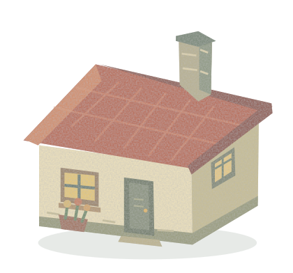
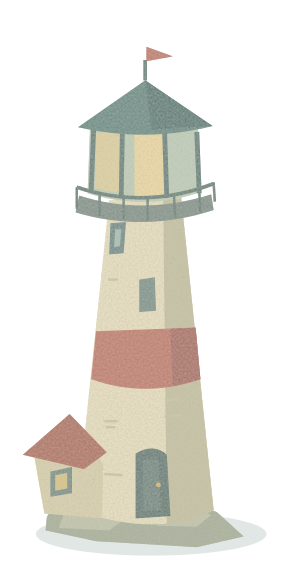
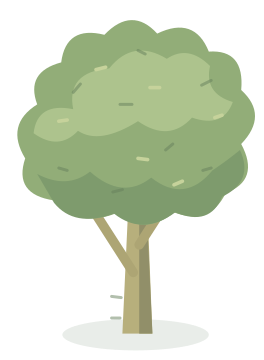
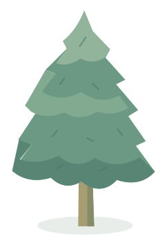
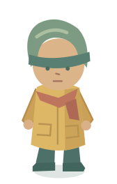

Warm plaster · weathered roof · a window garden

Painted masonry · sea-green lantern · coral band


Asymmetric canopies · sparse pigment marks

An ochre raincoat · a red scarf · a little backpack